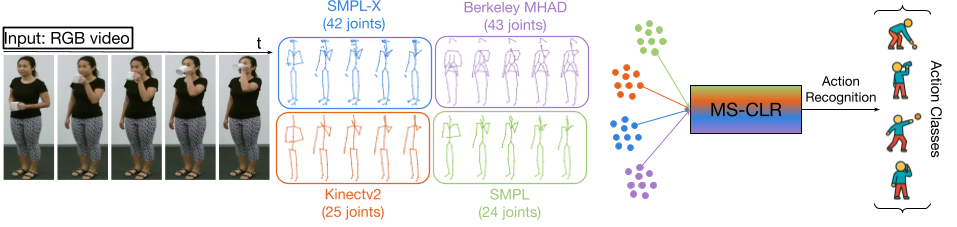
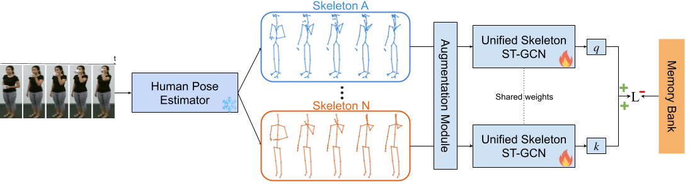

MS-CLR is a self-supervised framework that learns structure-invariant representations by contrasting pose sequences across multiple skeleton conventions extracted from the same video. It is built on top of a unified ST-GCN backbone that supports heterogeneous joint topologies via zero-padding and format-specific adjacency matrices.
During training, skeletons such as Kinectv2, SMPL-X, or Berkeley MHAD are treated as distinct views of the same action. These are passed through the encoder and contrasted using a multi-format InfoNCE loss, aligning features across structural variations like joint count, connectivity, and anatomical detail.
After pretraining, a linear classifier is trained on frozen representations to assess performance. Optionally, skeleton-specific classifiers are trained and ensembled to further improve accuracy by leveraging complementary structural cues.

Figure: MS-CLR contrasts pose embeddings from multiple skeleton formats—extracted from the same RGB sequence—using a unified ST-GCN encoder, encouraging structure-invariant representation learning.
Contrastive learning has gained significant attention in skeleton-based action recognition for its ability to learn robust representations from unlabeled data. However, existing methods rely on a single skeleton convention, which limits their ability to generalize across datasets with diverse joint structures and anatomical coverage. We propose Multi-Skeleton Contrastive Learning (MS-CLR), a general self-supervised framework that aligns pose representations across multiple skeleton conventions extracted from the same sequence. This encourages the model to learn structural invariances and capture diverse anatomical cues, resulting in more expressive and generalizable features. To support this, we adapt the ST-GCN architecture to handle skeletons with varying joint layouts and scales through a unified representation scheme. Experiments on the NTU RGB+D 60 and 120 datasets demonstrate that MS-CLR consistently improves performance over strong single-skeleton contrastive learning baselines. A multi-skeleton ensemble further boosts performance, setting new state-of-the-art results on both datasets.
MS-CLR achieves state-of-the-art performance on NTU RGB+D 60 under both cross-subject and cross-view protocols.
| Model | X-Sub (%) | X-View (%) |
|---|---|---|
| MS-AimCLR (joint) | 76.1 | 83.0 |
| MS-AimCLR (motion) | 73.1 | 80.4 |
| MS-AimCLR (bone) | 76.1 | 82.2 |
| 3s-MS-AimCLR | 80.9 | 86.7 |
| 3s-MS-AimCLR (Ensemble) | 88.0 | 94.2 |
Evaluation follows the linear protocol on NTU RGB+D 60 under X-Sub and X-View splits. The ensemble version averages predictions across skeleton-specific classifiers.